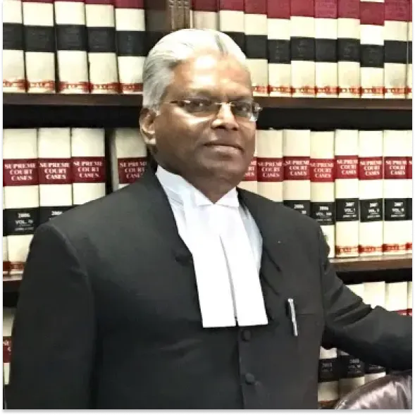

Home Dr. A. Francis Julian

Dr. A. Francis Julian
Senior Advocate, Supreme Court of India.
Dr. A. Francis Julian is a Senior Advocate in the Supreme Court of India with 46 years of standing at the Bar. He has appeared in cases involving a wide range of laws, many of which have become reported judgments of the Supreme Court. He has also handled several cases involving universities and educational institutions.
He is empaneled as a maritime arbitrator with the London Maritime Arbitrators Association and the Indian Council of Arbitration.
Education
- Doctor of Juridical Science (S.J.D) January 1985, Tulane University, New Orleans, La, USA. (Aug. 1982-Jan. 1985).
- Master of Comparative Laws (M.C.L), May 1982. Southern Methodist University, Dallas, Tx., USA, (Aug. 1981-May 1982).
- Master of Laws (M.L.), Sept. 1978, University of Madras, Madras, India.
- Post-Graduate Diploma in Criminology and Forensic Sciences (D.C.F.Sc.), Aug. 1976, University of Madras, Madras, India.
- Bachelor of Laws (B.L.), June 1975, University of Madras, Madras, India.
- Bachelor of Science (B.Sc.), May 1972, University of Madurai, Madurai, India.
Dr. Julian was awarded the K.S. Naidu Memorial prize by the Bar Council of Tamil Nadu in 1975 for securing the highest marks in procedural laws at Madras University in the 1975 Law Examination. He also secured the first rank in Master of laws Degree Examination of Madras University in 1978. He also secured first rank in D.C.F.Sc. Examination of Madras University in 1976.
Academic Activities
Dr. Julian is a Founder Member of the Governing Board, Board of Management and Academic Council of O.P. Jindal Global University, where he is also an Adjunct Professor of Law teaching International Commercial Arbitration and Maritime Law. He also taught these subjects at the Indian Law Institute, New Delhi.
He is also a Member of the Board of Management of Karunya University, and a past Member of the Academic Council of National Law University, Jodhpur, Rajasthan. Dr. Julian was also a Member of the University Grants Commission Committee on “Restructuring Legal Education” and drafted the Rules and the course materials for the one year LLM programme.
He has been a resource person for training High Court Judges and District Judges in National Judicial Academy, Bhopal, Madhya Pradesh. He has delivered more than 100 presentations of research papers and speeches in several national and international seminars.
Publications
- “International Banking and the Third World Debt Crisis-A Study on State Insolvencies”. Doctoral Dissertation – Tulane University, New Orleans, USA Dec. 1984.
- “Transnational Loan Agreements: Applicable Laws and Practice”, 1987(3) Supreme Court Cases (Journal) P. 49.
- “Applicability of Probation Laws to Offenders of New Forms of Crimes”, Issues on Probation in India, University of Madras, Madras, India. (1993)
- “Procedural Laws on Family Dispute Resolution in India,” National Reporter, International Association on Procedural Laws, XII World Congress, Mexico 2003.
- “Right to Information” Justice and Peace Commission, New Delhi (2005)
- “Legal Aspects of Disaster Management in India”, in “Disaster Management Law”, Indian Law Institute (2006).
- “Arbitration Law”, Annual Survey of Indian Laws, Indian Law Institute, New Delhi (2005, 2006,2007, & 2008).
- “Tsunami and Disaster Management law in India” in TSUNAMI AND DISASTER MANAGEMENT: LAW AND GOVERNANCE (Sweet & Maxwell Thomson). (2006)
- “Money Laundering Crime: Emerging International Legal Regime”, Indian Law Institute, New Delhi. (2008)
- Ed. Book “Globalization and Good Governance”, (2010)
- “Future of Indian Universities: Need for a Liberalized Legal Regime”, THE FUTURE OF INDIAN UNIVERSITIES, C. Raj Kumar (Ed.), Oxford (2017)
- “Combatting Financing Terrorism”, Jindal Global Law Review, Vol.I, pp. 76-96, 2009
- “Admiralty Procedure Law Reform in India”, Lloyd Shipping and Trade Law (19) (6) (July/August 2019), p. 4-6.